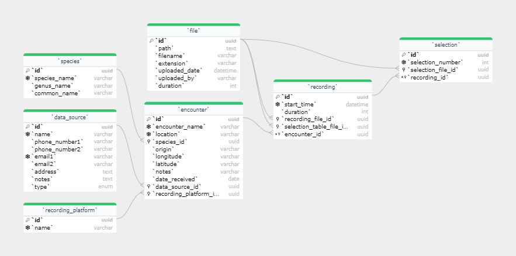
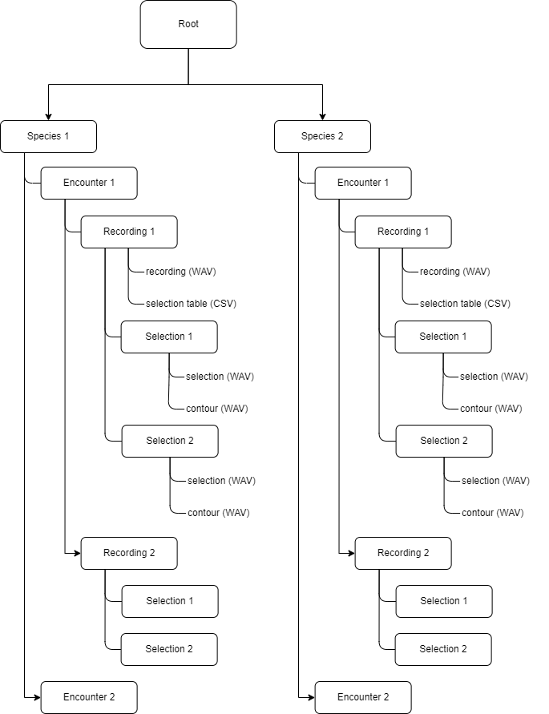

⚠️ warning: this project is still in a developmental stage. Some sections of the code and/or documentation may be incomplete.
This Database Management System (DBMS) is a project that aims to streamline the data pipeline of the Dolphin Acoustics VIP (the Project) at the University of St Andrews.
The ensuing readme details the structure of the code written for the DBMS user interface, otherwise referred to as the Web App.
Familiarity with the data pipeline and implementation strategy, as well as the requirements written below are prerequisite.
The Web App has been developed on, and for, a Lunix based system (Debian 12). It is recommended to continue development on a Linux machine, whether physical or virtual. Listed below are dependencies of the DBMS:
`
The DBMS was developed to store a range of files at various spots in the data pipeline of the Project (for more specific details on each file please view the project report):
The storage of data was split into two separate streams which were then brought together by a web application:
This repository includes all Webapp code, as well as helper code and documentation to setup the MetaBase and File Space.
The MetaBase was developed in MariaDB, which needs to be installed on a Linux machine or virtual machine before the Webapp can be run successfully (see dependencies).
Once downloaded, the MetaBase may be initialised and a new database created. The database must then be populated by running the script in create_database.sql.
The Webapp was developed using Flask in Python, which needs to be installed on a Linux machine or virtual machine before the Webapp can be run successfully (see dependencies).
To setup the virtual environment with all the required packages, run the following command from the root directory of the Webapp.
python3 virtualenv venv && venv/bin/pip install -r requirements.txt
The File Space is simply a designated path on the file system of the server (the machine running the Webapp). To set this folder, insert the relative or absolute path into file_space_path.txt in the program root. For testing purposes it is recommended to use a relative path such as filespace as the File Space.
The python script db.py handles all database connection. For security reasons, all database connection parameters were required to be stored in the global environment variables.
The following are the parameters that must be set:
STADOLPHINACOUSTICS_HOST to set the host of the database (usually localhost for local development environment)STADOLPHINACOUSTICS_USER to set the user of the database (usually root for local development environment)STADOLPHINACOUSTICS_PASSWORD to set the password of the database (must be set in the MariaDB shell)STADOLPHINACOUSTICS_DATABASE to set the name of the database (must be created in the MariaDB shell)While it is recommended to set these variables manually, set_os_variables.py was written to set these environemnt variables. Please read and understand the code beforehand and use with caution.
If Google Maps are desired to view encounter coordinates, a Maps Embed API key is required to be placed in google_api_key.txt in the program root. See here for more details.
To start the server, run app.py from within the Python virtual environment from the root directory.
The metadata for each file was stored in a MariaDB database, otherwise called the MetaBase. See Setting Up the Metabase.
The MetaBase currently models most data from the point of an audio recording to storing selections. An entity relationship diagram for the current MetaBase is shown below, where each entity contains attributes and foreign key references to other tables.


Each entity was given a Universally Unique Identifier (uuid) such that foreign key references could be simplified. Additional unique and nullity constraints were therefore defined in each table to standardise data quality assurance.
The following subsections describe the tables from the ER diagram in more detail. Note that particular implemention details are found in create_database.sql.
Stores information on a marine animal encounter. Categorical information was stored in separate entities (species, data_source, and recording_platform) while other information in entity attributes.
Stores general metadata on a file stored in the File Space, such as the filename, extension, and upload date. Each file was given a unique ID that could be referenced by other entities that required file storage.
Stores information on each recording in an encounter. Intuitively, each recording references an encounter (many-to-one).
Stores a particular selection (otherwise known as clip) from a recording. Intuitively, each selection references a recording.
All data files stored by the user in the DBMS are placed in the File Space. The File Space should already be initialised above.
Warning: the File Space should rarely be manually modified by the Developer and never by the User. This is because changing file paths would invalidate the file references in the MetaBase.
An important aspect of the File Space is its heirarchical structure that can be understood by the user. Namely, when a file is added to the DBMS, it is placed in an intuitive location within the File Space. With read-only permissions, a user could then access files without using the Web App as an intermediary.
 The File Space shown in a diagramattic form. Note that the numbering system is for demonstration purposes only and does not accurately reflect the File Space itself
The Web App brings together the MetaBase and the File Space into a single user interface. The Web App was written in Flask, meaning the code contained Python files to define routes and HTML, CSS, and JavaScript files to create the user interface.
The following folders exist in the Web App's root directory (note that a module refers to a compartamentalised section of code pertaining to a specific functionality such as encounter, recording or selection):
resources contains additional files required in the Web App such as images.routes contains all the Flask route blueprints for separate modules.static contains all CSS scripts used in the user interface.templates contains all HTML scripts used in the user interface.db.py and loads all routes.Templates are pre-designed layouts that arrange content on a webpage, usually written in HTML. Found in the templates folder, templates were structured into modular sub-categories for set funcations.
The template templates/partials/header.html was created to define a reusable header at the top of each page.
Styling (or CSS) files were stored in the static folder. These files were referenced in each of the templates through a route specified in app.py.
Routes are a server-side URL schema which describe interfaces through which a client can interact with a web app. Routes follow a Hypertext Transfer Protocol (HTTP) through which requests such as GET and POST can be made. Any request sent to the server that matches a defined URL schema is handed to the associated method defined in routes.
The majority of routes exist in the folder routes, however the mainline app.py also contains some basic routes such as
/homeand/, where the latter redirects to the prior.
HTTP has a large number of possible request types. For simplicity, the Web App uses:
GET to load templates and/or send information to the client;POST to send information from the client to the server, usually to complete a CRUD operation in the MetaBase.When interacting with the MetaBase, an object relational mapping (ORM) based approach was implemented. This allowed all the database relations to be lazily and effortlessly loaded in a familiar object-oriented structure in Python.
The classes for each relation were written in models.py using the Flask-SQLAlchemy. This library was chosen as it offered seamless integration with the web application. The structure of each model was written to closely match the MetaBase schema.
Additional methods were also written within each ORM class as to provide additional APIs for the program to interact with the database, such as:
update_call()This method was written in each class as a generic method that could be used to implement clean-up or quality-assurance checks. In addition, calling the update_call() method in a master would subsequently call update_call() in all its slaves.
An example of the update_call method being used is when metadata of a species is changed. Each encounter, recording, and selection that are slave to that species would have their own
update_call()methods added to the call stack. Functionality written in these methods would then update the files in the File Space to include the updated species data.
delete()This method was written in each class to prevent foreign key error references upon delete. Upon the deletion request of a master object (by calling delete() in the master), the delete() method in each slave would be added to the call stack, and would need to be fulfilled first before the master could be deleted.
Cascading delete is dangerous, and where it is implemented the user should always be warned before execution.
whereby upon the deletion of a master class (e.g., recording), all slave classes could also be deleted (e.g., selection).
As data must be synchronised between the File Space and MetaBase, atomicity is crucial. An atomic database transaction is one where either all required operations occur or none at all.
To implement atomicity in the Web App, all database operations were bundled into sessions. If an error was produced in interacting with the File Space, any metadata changes pertainin the the request would be rolled back, and the same would be true the other way round.